CAPÍTULO 3 - Transformações geométricas
Vimos nos anos anteriores que as figuras planas podem sofrer determinados movimentos ou transformações no plano, de tal maneira que a sua forma e o seu tamanho sejam preservados. Observe:
- Simetria por reflexão: dado um eixo de simetria, podemos refletir uma figura dada, achando a figura simétrica a esta.
![Ilustração de uma imagem colorida de estilo mexicano formada a partir de flores, pétalas e penas de aves estilizadas. A figura, dividida ao meio por uma linha imaginária e central, sugere duas metades iguais refletidas como num espelho. De cima para baixo, observa-se um coração vermelho de bordas laranjas; dois pássaros de bicos unidos, com as cabeças de caveira e corpos de flores; duas figuras ovaladas, com flores de pétalas vermelhas dentro, similar a dois grandes olhos; dois tucanos coloridos, um de costas para o outro, e entre os tucanos, penas verdes e vermelhas estão organizadas remetendo a um nariz. Essa composição, assemelha-se a uma cabeça de raposa. A imagem tem fundo roxo, e ao redor da cabeça da raposa, figuras de penas e pétalas, espalhadas desordenadamente, de diferentes tamanhos e cores preenchem o espaço vazio.](../../resources/images/8ANO_U2_image/M8A_8_ano_mat_P_46_Simetria_por_reflex_o.png)
47
- Simetria por rotação: é uma transformação geométrica na qual giramos uma figura dada em torno de um ponto fixo, seguindo um sentido e um ângulo.
- Simetria por translação: é uma transformação geométrica na qual deslocamos ou transladamos a figura dada, de modo que a figura deslocada seja congruente à original. Nesse caso, todos os pontos da figura são deslocados paralelamente e à mesma distância.
- No menu superior, selecione a ferramenta (Polígono) para construir o triângulo ABC.
- Em seguida, selecione no menu superior a opção 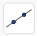 (Reta), para traçar a reta passando por 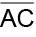.
- Selecione no menu superior a opção (Reta), para traçar a reta passando por 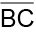.
- Usando a ferramenta (Reflexão em relação a uma reta), selecione o triângulo ABC e a reta , para criar o polígono A’B’C’ simétrico ao polígono ABC em relação à reta .
- Faça o mesmo procedimento em relação à reta .
- No menu superior, selecione a ferramenta (Polígono), para construir o triângulo ABC.
- Em seguida, selecione no menu superior a opção 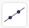 (Reta), para traçar a reta passando por .
- Selecione no menu superior a opção 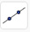 (Reta), para traçar a reta passando por .
- Usando a ferramenta 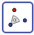 (Rotação em torno de um ponto), selecione o triângulo ABC e o ponto C e o ângulo de rotação. Por exemplo, 180° e crie o polígono A’B’C’ simétrico ao polígono ABC em relação ao ponto C.
- Faça o mesmo procedimento em relação ao ponto A.
- No menu superior, selecione a ferramenta (Polígono), para construir o triângulo ABC.
- Em seguida, selecione no menu superior a opção 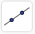 (Reta), para traçar a reta passando por .
- Selecione no menu superior a opção 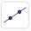 (Reta), para traçar a reta passando por .
- Crie um vetor indicando o sentido e a direção que terá a translação com a ferramenta 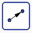 (Vetor).
- Usando a ferramenta 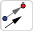 (Translação por um vetor) selecione o triângulo ABC e o último vetor, para criar o polígono A’B’C’ transladado.
![Ilustração de uma figura colorida com uma transformação geométrica de rotação. Ao centro, duas estrelas de 6 pontas estão sobrepostas: uma vermelha maior e uma branca menor. Elas têm as pontas alinhadas e estão ligeiramente inclinadas para a direita. Ao redor da estrela maior estão 6 pequenos círculos brancos, cada um ocupando o espaço entre as pontas. Também próximo a cada ponta da estrela grande tem um círculo maior e vermelho. Entre os círculos vermelhos há uma forma alaranjada que se assemelha a um ponto de interrogação de curvatura para a direita. E ao lado delas estão 4 figuras indefinidas que preenchem o espaço: duas brancas, uma verde e uma alaranjada. Essa composição se repete seis vezes ao redor das estrelas centrais. A inclinação das duas estrelas e a curvatura da figura alaranjada sugerem a ideia de rotação para a direita.](../../resources/images/8ANO_U2_image/M8A_8_ano_mat_P_47_Simetria_por_rota__o.png)
48
Construindo figuras geométricas simétricas com softwares de geometria dinâmica
Para auxiliar na construção de figuras geométricas podemos usar softwares de geometria dinâmica, estes programas são ambientes virtuais que apoiam no ensino e aprendizagem da Geometria. Para as construções a seguir vamos usar o GeoGebra, um software livre e dinâmico de Matemática que possui uma versão on-line e uma versão para download, ambas disponíveis no endereço: http://www.geogebra.org/. Para esse estudo, vamos utilizar a versão on-line.
Simetria de reflexão em relação a uma reta
Vamos construir um quadrilátero utilizando o GeoGebra.
![Menu do software GeoGebra dividido em 8 partes. Da esquerda para a direita: A letra A maiúscula com um ponto abaixo dela. A ferramenta Reta: uma reta na diagonal com dois pontos. Duas retas paralelas. Um polígono no formato de um triângulo com pontos em cada vértice. Um círculo com a medida do raio, abaixo dele uma reta com dois pontos, um em cada extremidade. Dois pontos dentro de um círculo e um terceiro ponto na circunferência. Duas retas formando um ângulo alfa. E uma linha na diagonal, à esquerda um ponto. À direita, um outro ponto. Abaixo do menu um triângulo ABC, sendo BC a base do triângulo, na horizontal. AC é seguimento vertical formando 90 graus com BC. E AB é um seguimento diagonal à esquerda do lado esquerdo do triângulo.](../../resources/images/8ANO_U2_image/GEOGEBRA_01.jpg)
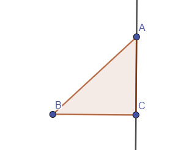
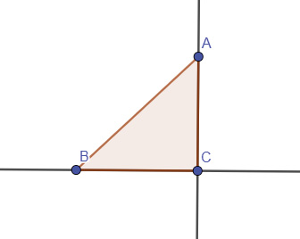
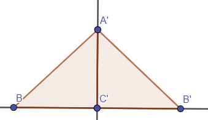
49
Simetria de rotação em torno de um ponto
Vamos construir um polígono utilizando o GeoGebra.
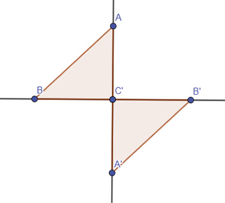
50
Simetria de translação em torno de um ponto
Vamos construir um triângulo utilizando o GeoGebra.
![Menu do software GeoGebra dividido em 8 partes. Da esquerda para a direita: A letra A maiúscula com um ponto abaixo dela. A ferramenta Reta: uma reta na diagonal com dois pontos. Duas retas paralelas. Um polígono no formato de um triângulo com pontos em cada vértice. Um círculo com a medida do raio, abaixo dele uma reta com dois pontos, um em cada extremidade. Dois pontos dentro de um círculo e um terceiro ponto na circunferência. Duas retas formando um ângulo alfa. E uma linha na diagonal, à esquerda um ponto. À direita, um outro ponto. Abaixo do menu um triângulo ABC, sendo BC a base do triângulo, na horizontal. AC é um seguimento vertical formando 90 graus com BC. E AB é um seguimento diagonal à esquerda do lado esquerdo do triângulo.](../../resources/images/8ANO_U2_image/GEOGEBRA_11.jpg)
51
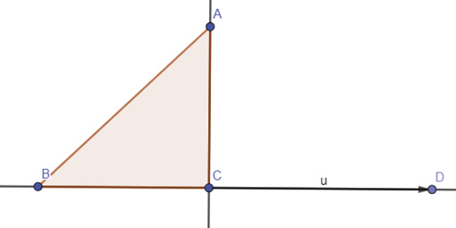
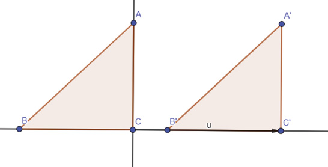
upklyak/Freepik
S.I/Freepik
GarryKillian/Freepik
Encontre soluções
- Crie um pentágono utilizando a ferramenta “Polígono regular” do software e construa outros pentágonos, sendo:
- um por simetria por reflexão;
- um por simetria por rotação;
- um por simetria por translação.
- Pesquise em sites, jornais ou revistas, algumas obras de arte nas quais são utilizadas algum tipo de simetria. Após a pesquisa, reproduza uma obra de arte e compartilhe com seus colegas.
52
Probabilidade e estatística
- Planejando e executando uma pesquisa amostral
Aprendemos nos anos anteriores que para realizar uma pesquisa, após definir o tema e objetivo, precisamos definir a população ou o universo estatístico, ou seja, as pessoas que irão participar desta pesquisa.
Na realização de uma pesquisa nem sempre é possível entrevistar toda a população desejada, desta forma, são selecionadas algumas pessoas da população que compõem a amostra e que irão participar da entrevista. Neste caso, temos uma pesquisa amostral.
Como exemplo, podemos citar as pesquisas eleitorais. Nessas pesquisas, é comum que seja divulgado quantos eleitores foram consultados, a escolha correta da amostra é fundamental e os principais tipos de amostragem são:
53
- aleatória simples (quando os indivíduos da pesquisa são escolhidos ao acaso).
- sistemática (quando os indivíduos da pesquisa estão ordenados, é escolhido o primeiro indivíduo e os demais seguem uma regra. Por exemplo, se o ponto de partida é o indivíduo 3, o próximo elemento a compor a amostra é o 5, a partir do elemento 3; e assim por diante, de 5 em 5).
- conglomerada (quando os indivíduos são divididos em grupos, conforme a sua localização geográfica, por exemplo. Em seguida, uma amostra aleatória de cada grupo é selecionada para a pesquisa).
- estratificada (quando os indivíduos são divididos em grupos homogêneos e, dentro de cada grupo, eles são escolhidos aleatoriamente).
Atualmente, recebemos diversos resultados de pesquisas amostrais para auxiliar a tomar decisões como, por exemplo: comprar determinado celular, tomar ou não um remédio, votar ou não em um político, aplicar ou não em uma ação na bolsa de valores, etc. Essas decisões são tomadas na análise de informações que supomos serem verídicas. Para tomarmos decisões mais assertivas, é sempre importante verificar a fonte da pesquisa, a amostra e como foi realizada.
- Converse com um colega sobre os dados veiculados na imprensa e nas redes sociais. Eles são sempre dados confiáveis? Como podemos checar as informações?
Vamos realizar uma pesquisa amostral?
- Com seu colega, escolham um dos principais temas da pesquisa: física, ética ou economia.
- Definam como será a escolha da amostra da população para a realização da pesquisa.
- Elaborem as perguntas que serão usadas na entrevista com os participantes.
- Combinem como será feito o registro dos dados coletados.
- Após a coleta dos dados, representem por meio de tabelas ou gráficos.
- Construam os gráficos utilizando um software de planilha eletrônica.
- Produzam um texto interpretando os dados obtidos, apresentando os dados como medidas de tendência central e a amplitude a partir das informações coletadas.
- Troque ideias com seu colega e digam, na opinião de vocês, o porque as pesquisas censitárias e amostrais são importantes no olhar das políticas públicas.

54
relembrE
- Desenhe uma reta r e marque um ponto P a uma distância qualquer. Em seguida, trace uma reta s perpendicular à reta r, passando pelo ponto P.
- Construa um hexágono, como o indicado a seguir, e trace uma reta perpendicular ao lado CD, passando pelo vértice A.
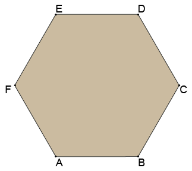
- Utilizando régua e transferidor, represente em seu caderno os ângulos:
- 120°
- 105º
- 150º
- Observe os passos a seguir.
- Faça um círculo de raio qualquer.
- Desenhe o diâmetro vertical e horizontal.
- O diâmetro vertical nos ajudará a determinar o ponto A, o primeiro vértice do polígono.
- O diâmetro horizontal nos dará o segmento de reta OF.
- Ache o ponto médio do segmento de reta OF: para isso, basta abrir o compasso em uma medida qualquer (que seja maior que a metade do segmento OF) e traçar um arco a partir de O. Faça o mesmo arco, com a mesma medida, a partir de F: esta operação nos dará a mediatriz (linha que divide um segmento de reta exatamente ao meio). O ponto que a mediatriz corta o segmento OF é o ponto médio P.
- Em P, trace o segmento de reta PA.
- Com a ponta-seca do compasso em P, leve a outra ponta do compasso até A e trace até achar o ponto Q: a distância AQ é o lado do polígono.
- Transporte o ponto Q para a circunferência original (colocando a ponta-seca do compasso em A e a outra ponta em Q, fazendo um arco em direção à circunferência) e com isso achamos o vértice E.
55
- Pegue a medida AE (que é a mesma que AQ) com o compasso e, a partir do vértice E vá marcando os próximos vértices.
- Ao executar esses passos, qual figura você terá desenhado?
- Utilizando um transferidor abaixo, meça os ângulos indicados e anote a medida em seu caderno.
- AÔB
- AÔE
- GÔH
- FÔH
- BÔF
- GÔD
- Crie um hexágono regular e construa outros hexágonos, sendo:
- um por simetria de reflexão;
- um por simetria de rotação;
- um por simetria de translação.
- (ENEM) Um programa de edição de imagens possibilita transformar figuras em outras mais complexas. Deseja-se construir uma nova figura a partir da original. A nova figura deve apresentar simetria em relação ao ponto O.
![Sobre o transferidor, semirretas vermelhas a partir do ponto O, no centro, as semirretas passam pelos pontos A, B, C, D, E, F, G, H. A semirreta com o ponto A é horizontal na medida de 180 graus do transferidor. A semirreta com o ponto B é uma diagonal apontada para a direita, na medida dos 154 graus. A semirreta com o ponto C é uma diagonal apontada para a direita, na medida dos 135 graus. A semirreta com o ponto D é uma diagonal apontada para a direita e para cima, na medida dos 107 graus. A semirreta com o ponto E é uma linha vertical apontada para cima, na medida dos 89 graus. A semirreta com o ponto F é uma diagonal apontada para a esquerda, na medida dos 37 graus. A semirreta com o ponto G é uma diagonal apontada para a esquerda, na medida dos 7 graus. A semirreta com o ponto H é horizontal na medida do zero grau do transferidor.](../../resources/images/8ANO_U2_image/transferidor com 8 setas.png) 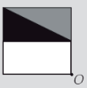
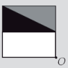A imagem que representa a nova figura é:
- 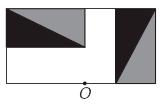
![Em um retângulo na horizontal o ponto O está no centro e na base. Ele divide o retângulo ao meio com uma linha vertical, formando quatro retângulos horizontais. O primeiro retângulo localizado à esquerda e acima está dividido ao meio em diagonal com o lado preto na parte debaixo e à esquerda e o lado cinza na parte de cima, à direita. O segundo retângulo é branco e está localizado à esquerda e abaixo. O terceiro retângulo também é branco e está localizado à direita e acima. O quarto retângulo localizado abaixo à direita. Ele está dividido ao meio na diagonal com o lado cinza abaixo à esquerda e preto à direita acima.](../../resources/images/8ANO_U2_image/exercicio7_3.png)
![Em um retângulo na horizontal o ponto O está no centro e na base. Ele divide o retângulo ao meio com uma linha vertical, formando quatro retângulos horizontais. O primeiro retângulo localizado à esquerda e acima, está dividido ao meio em diagonal com o lado preto na parte debaixo à esquerda e o lado cinza na parte de cima, à direita. O segundo retângulo é branco e está localizado à esquerda abaixo. O terceiro retângulo à direita acima está dividido ao meio na diagonal com o lado cinza à esquerda acima e o lado preto à direita abaixo. O quarto retângulo é branco e está à direita abaixo.](../../resources/images/8ANO_U2_image/exercicio7_4.png)
![Dois quadrados um em cima e d embaixo dispostos em diagonal ligados pelo ponto O. O quadrado de cima à esquerda está dividido ao meio na horizontal, formando dois retângulos. O primeiro é o retângulo de cima, ele está dividido ao meio em diagonal com o lado preto na parte debaixo à esquerda e cinza na parte de cima à direita. O segundo retângulo localizado na parte de baixo é branco. O segundo quadrado abaixo e à direita também está dividido ao meio na horizontal, formando dois retângulos. O retângulo de cima é branco e o retângulo debaixo está dividido ao meio em diagonal com o lado cinza na parte debaixo à esquerda e preto na parte de cima à direita.](../../resources/images/8ANO_U2_image/exercicio7_6.png)